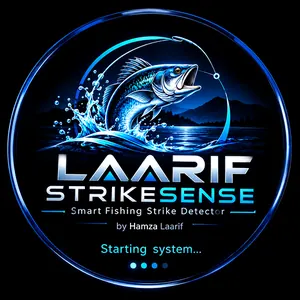

Not connected to your rod
- 1Switch the rod unit on.
- 2Join the WiFi StrikeSense-Test (password 12345678).
- 3If Android says "No internet", choose Stay connected / Keep. The rod doesn't need internet.
- 4Come back here. The dashboard opens by itself.
Laarif StrikeSense · keeps watching your rod in the background,
even with the screen off